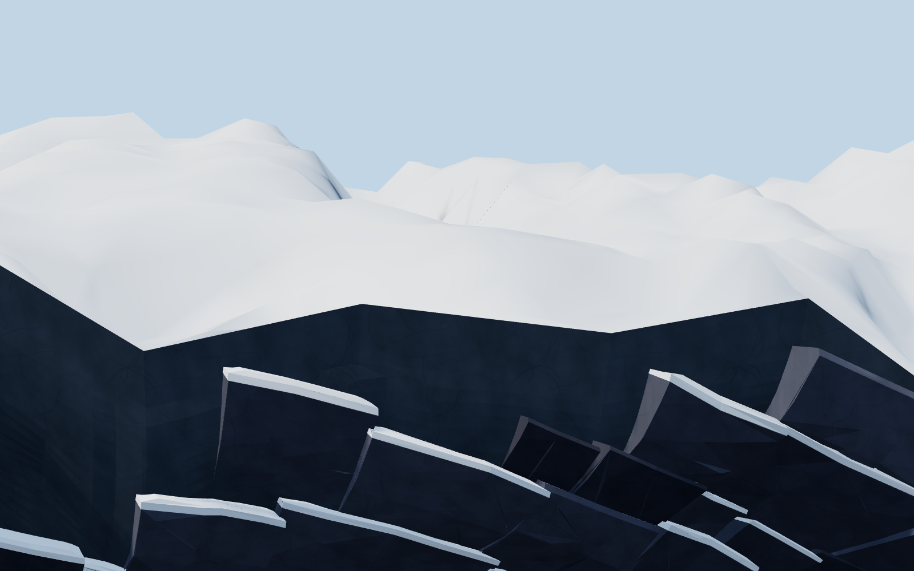
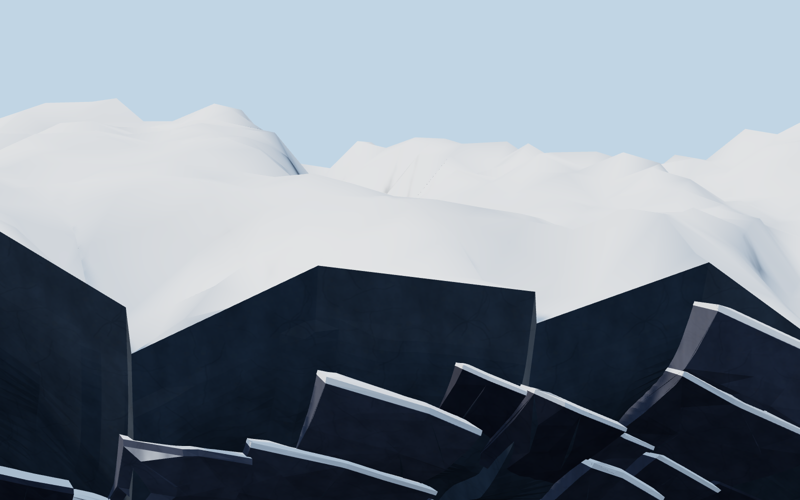
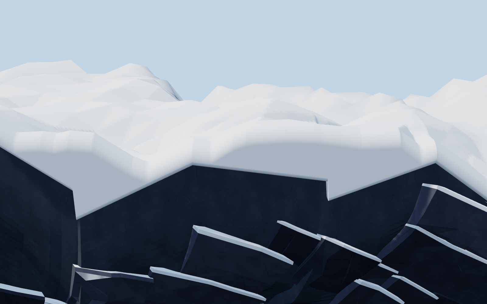
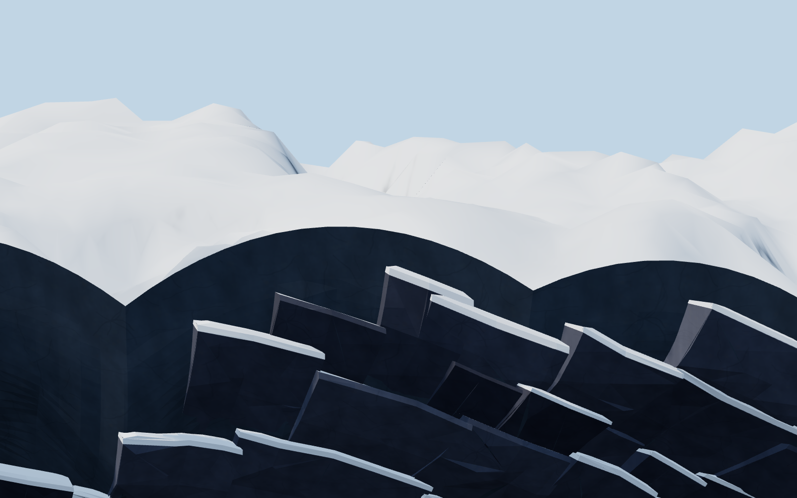
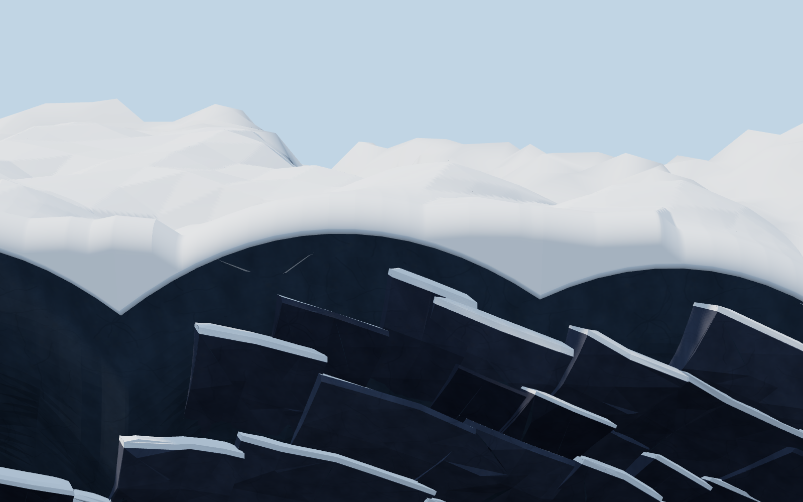

Снег F · три прежние кромки · ракурс 1
Слева и справа одинаковые камень, подушки, камеры, свет 2,30 и нормали F. Дефекты сохранены.
Ломаная · без нового снега

Ломаная · со снегом F

Ступеньки · без нового снега

Ступеньки · со снегом F

Дуги · без нового снега

Дуги · со снегом F
